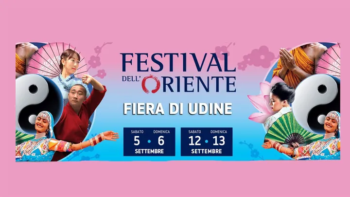

da sab 5 set a dom 13 set · dalle 10:00
Festival dell’Oriente
Spettacoli, danze, folklore, arti marziali, corsi e attività dedicate alle culture asiatiche in due fine settimana.
 Indicazioni
Indicazioni
- Costi e prenotazioni
- Online: intero €16,80, ridotto €11,80 · cassa: €16/€11 · Biglietto online facoltativo con corsia riservata
- Programma
- Date confermate; scaletta parziale. Spettacoli descritti nel programma generale; distribuzione e orari delle singole esibizioni non ancora acquisiti.
- In caso di maltempo
- Evento ospitato nei padiglioni fieristici coperti.
- Note
- Orario di accesso discordante fra biglietteria e scheda turistica: verifica prima di partire.
L’EVENTO
Descrizione completa
Il Festival dell’Oriente occupa i padiglioni della Fiera di Udine per due fine settimana consecutivi. Dalle 10:00 alle 20:00 si alternano spettacoli, musica, danza e folklore con artisti provenienti da numerosi Paesi asiatici.
Accanto al palco sono previste aree dedicate a discipline, benessere, arti marziali, corsi e attività incluse nel biglietto. I biglietti si acquistano online oppure alla cassa; i bambini sotto gli otto anni non compiuti entrano gratuitamente.
La sede dispone di numerosi parcheggi. Per ridurre i tempi di ingresso è disponibile una corsia riservata ai biglietti acquistati online.
IL PROGRAMMA
Programma e orari
Apertura 10:00–20:00 secondo PromoTurismoFVG. La biglietteria online per il 5 settembre indica invece 09:00: l’orario di accesso va confermato. L’elenco seguente presenta alcuni spettacoli del programma generale, senza attribuirli a una giornata o a un orario non verificati.
Giornate del festival
- 5, 6, 12 e 13 settembre · attività e spettacoli in fiera.
Musica nel programma generale
- Percussioni taiko con Takuya Taniguchi.
- Khukh Mongol: musica e danza dalla Mongolia.
- Musica cinese con guzheng ed erhu.
- Canto giapponese con Ayumi Togo e strumenti tradizionali giapponesi.
Danza e spettacolo nel programma generale
- Bhangra del Punjab e danze dello Sri Lanka.
- Danza del leone, con esibizioni a terra e sui pali.
- Danze coreane e opera del Sichuan con cambio di maschera.
- Bollywood con Ambili Abraham, danze uyghur e kuchipudi.
Corsi e partecipazione
- Molte attività sono comprese nel biglietto e non richiedono prenotazione.
- Per le attività a numero chiuso occorre prenotare; controlla la disponibilità sul sito.
INFORMAZIONI UTILI
Prima di partire
- Apertura 10:00–20:00 in tutte e quattro le giornate.
- Ingresso gratuito fino a 8 anni non compiuti.
- Contatti: +39 340 2702433
ORGANIZZAZIONE